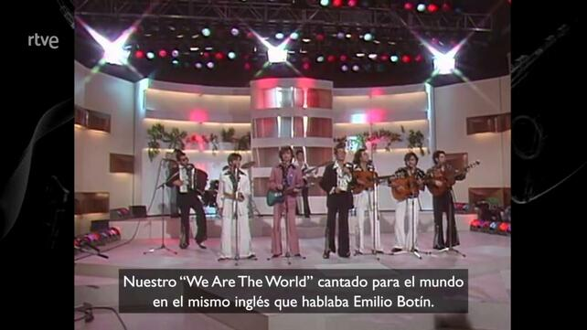

Cachitos. Primera parte
En las ya pasadas navidades se generó algo de polémica con el especial de cachitos nochevieja. Qué si los rótulos se metían mucho con la oposición, el rey y ciudadanos y muy poco con el gobierno. Así que me entró la curiosidad y pensé, ¿por qué no analizar los rótulos del cachitos nochevieja de 2020 y de paso del 2019? Pues me pusé manos a la obra. Lo primero de todo, dar las gracias a Raúl Vaquerizo y a Carlos Gil Bellosta por darme consejos y pasarme el enlace al blog de Waldo Jaquith en el que se basa esta primera entrada.
Esta primera parte va a consistir en varios pasos
- Bajar el video del especial cachitos nochevieja
- Extraer fotogramas con subtítulos (imagemagick)
- Recortar los subtítulos (imagemagick)
- Reconocimiento óptico de caracteres (tesseract)
Lo primero que tenemos que hacer es conseguir los vídeos de cachitos de 2019 y de 2020. Para el primero podemos encontrarlo en youtube, pero el segundo no estaba (al menos en el momento en que hice todo esto). Si está en youtube se puede descargar usando youtube-dl, pero cómo eso lo contará Raúl en uno de sus próximos post me voy a centrar en como descargar el cachitos 2020 desde la web oficial.
Para eso, una vez que ya hemos encontrado el programa que queremos, tenemos que ir a inspeccionar código , sección XHR, filtar por mp4 y darle al play para así poder identificar a qué Url hace request y ver exactamente la dirección de dónde está alojado el mp4. Mejor pongo una imagen

Del request Url anterior, nos quedamos con la dirección hasta el .mp4 y ya podemos bajarlo. Antes de nada, para todo el proceso aconsejor usar un SO unix -friendly. En el caso de linux es importante instalar por consola imagemagick, mplayer, parallel y tesseract.
Nos bajamos el video con
wget http://mediavod-lvlt.rtve.es/resources/TE_GLUCA/mp4/2/4/1609487028742.mp4
mv 1609487028742.mp4 2020_cachitos.mp4Una vez ya tenemos el video tenemos que decidir cuántos fotogramas extraer para pillar los subtítulos, viendo que los subtítulos duran entre 5 y 10 segundos , podríamos extraer un fotograma cada 220. Yo he decidido extraer uno cada 200 para ilustrar posteriormente como con análisis de texto podemos identificar los rótulos duplicados y también para que no se me escape ni un sólo subtítulo.
Vamos a utilizar mplayer para extraer 1/200 fotogramas a formato jpg.
mplayer -vf framestep=200 -framedrop -nosound 2020_cachitos.mp4 -speed 100 -vo jpeg:outdir=2020_jpg Y después de un rato (tengo que probar si hacerlo con ffmpeg es más rápido), tenemos unos 1300 jpg. Hemos resumido 3 horas de video en 1300 imágenes. Pongo un ejemplo.

Para ahorrar espacio reescalamos la imagen usando mogrify de imagemagick . Y aquí ya empezamos a usar parallel para hacer el proceso en paralelo.
cd 2020_jpg
# Uso los 6 cores físicos de mi portátil
# con {} le decimos que nos ponga el mismo nombre al fichero resultante, sustituyendo
# al anterior
find . -name '*.jpg' | parallel -j 6 mogrify -resize 642x480 {}Y el resultado es una imagen más pequeña
{kind=link}
Al extraer uno de cada 200 frames, muchas veces extraemos fotogramas sin rótulos y otras (las menos) el mismo rótulo 2 veces. 
{kind=link}
Para extraer sólo el rótulo hay que utilizar la herramienta crop también de imagemagick dónde le decimos la resolución de la imagen resultante y la coordenada x e y de la imagen de 642x480 original dónde empieza el corte. Aquí tuve que hacer bastantes pruebas hasta identificar la posición de los subtítulos, dado que el cuadro dónde aparecen es de tamaño variable.
En este caso decimos que nos cree ficheros tif que tengan el mismo nombr que el original y le añada el sufijo .subtitulo.tif. Por ejemplo tendremos ficheros con este patrón 00000186.jpg.subtitulo.tif
# en paralelo de nuevo
find . -name '*.jpg' | parallel -j 6 convert {} -crop 460x50+90+295 +repage -compress none -depth 8 {}.subtitulo.tif{kind=link}
Cómo me comentaba ayer alguien por twitter, tesseract es un poco “tiquismiquis”, así que para facilitarle el trabajo “negativizamos” las imágenes.
find . -name '*.tif' | parallel -j 6 convert {} -negate -fx '.8*r+.8*g+0*b' -compress none -depth 8 {}{kind=link}
Y ahora utilizamos tesseract para extraer el texto de estas imágenes. Recomiendo instalar tesseract con los modelos para el idioma español para que lo haga mejor (pille tildes y eñes). En ubuntu y derivados lo instalamos con apt
sudo apt-get install tesseract-ocr tesseract-ocr-spaYo estoy usando la versión 4.1.1, la cual dicen en su github que utiliza modelos LSTM para mejorar el reconocimiento de texto. Sea como fuere, para extraer el texto sería con
find . -name '*.tif' | parallel -j 6 tesseract -l spa {} {}y nos generaría un fichero txt por cada una de las imágenes .subtitulo.tif . La mayoría de esos txt no tienen texto (muchos fotogramas no tienen rótulo). Veamos cómo lo ha hecho con el fichero 00000186.jpg.subtitulo.tif.txt
╰─ $ ▶ cat 00000186.jpg.subtitulo.tif.txt
Nuestro “We Are The World” cantado para el mundo
en el mismo inglés que hablaba Emilio BotínPues al menos en este caso funciona bastante bien. En las siguientes entradas comentaremos brevemente como podríamos analizar los subtítulos.
Con estos pasos hemos conseguido extraer el texto de los subtítulos de unas 3 horas de vídeo, evidentemente si los subtítulos estuvieran en una pista srt dentro del mp4 no habría sido necesario todo esto. Este tipo de análisis hecho enteramente en bash es fácilmente escalable y se puede utilizar por ejemplo para identificar matrículas o similar.
Os dejo también un script extract_subtitles.sh que le pasas como argumento el año , 2020 o 2019 y te baja el video, te extrae los fotogramas, hace el ocr y te deja los ficheros de texto en un directorio.
Saludos.
#!/bin/bash
root_directory=/home/jose/proyecto_cachitos
mkdir -p $root_directory
cd $root_directory
echo "First arg: $1"
mkdir -p video
cd video
ANNO=$1
echo $ANNO
suffix_video="_cachitos.mp4"
suffix_jpg_dir="_jpg"
suffix_txt_dir="_txt"
video_file=$ANNO$suffix_video
echo $video_file
if [ "$ANNO" == "2020" ] ;
then
wget http://mediavod-lvlt.rtve.es/resources/TE_GLUCA/mp4/2/4/1609487028742.mp4
mv 1609487028742.mp4 $video_file
fi
if [ "$ANNO" == "2019" ] ;
then
wget https://rtvehlsvod2020a-fsly.vod-rtve.cross-media.es/resources/TE_GLUCA/mp4/0/9/1577860099590.mp4
mv 1577860099590.mp4 $video_file
fi
# Pasar a jpg uno de cada 220 fotogramas
mplayer -vf framestep=200 -framedrop -nosound $video_file -speed 100 -vo jpeg:outdir=$ANNO$suffix_jpg_dir
cd $ANNO$suffix_jpg_dir
# Convertir a formato más pequño
find . -name '*.jpg' | parallel -j 6 mogrify -resize 642x480 {}
# Seleccionar cacho dond estan subtitulos
find . -name '*.jpg' | parallel -j 6 convert {} -crop 460x50+90+295 +repage -compress none -depth 8 {}.subtitulo.tif
# Poner en negativo para que el ocr funcione mejor
find . -name '*.tif' | parallel -j 6 convert {} -negate -fx '.8*r+.8*g+0*b' -compress none -depth 8 {}
# Pasar el ocr con idioma en español
find . -name '*.tif' | parallel -j 6 tesseract -l spa {} {}
# mover a directorio texto
mkdir -p $root_directory/$ANNO$suffix_txt_dir
mv *.txt $root_directory/$ANNO$suffix_txt_dir
cd $root_directory